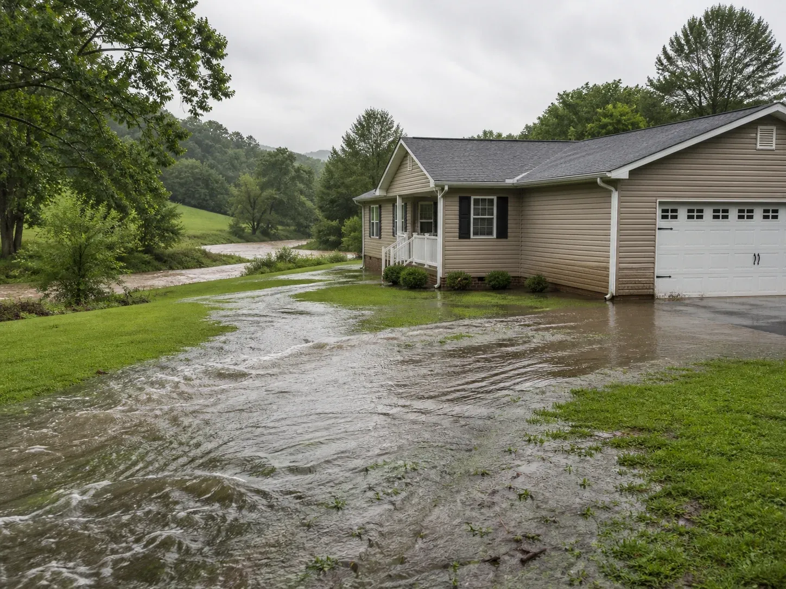
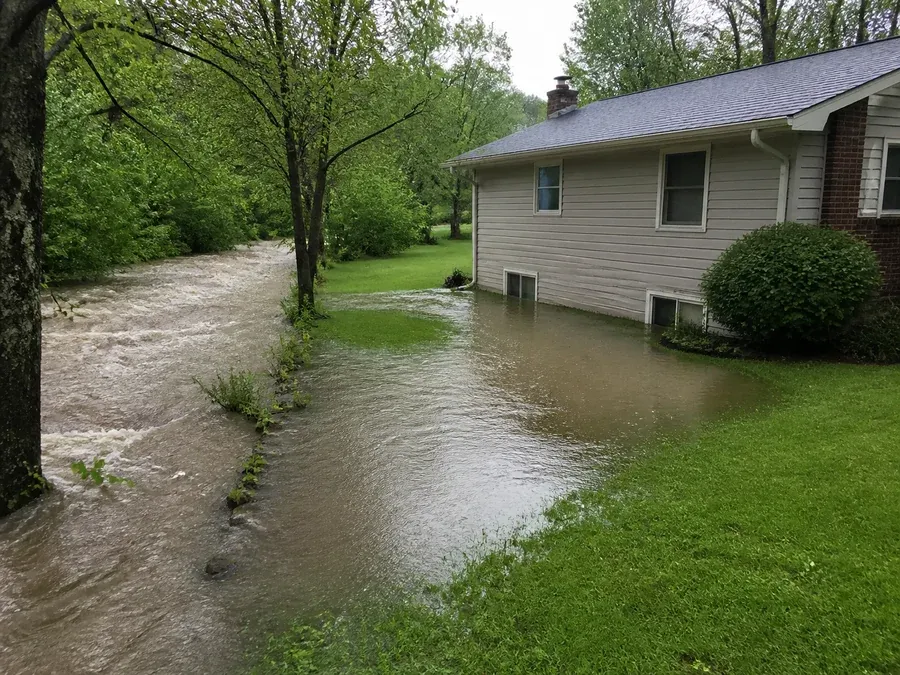
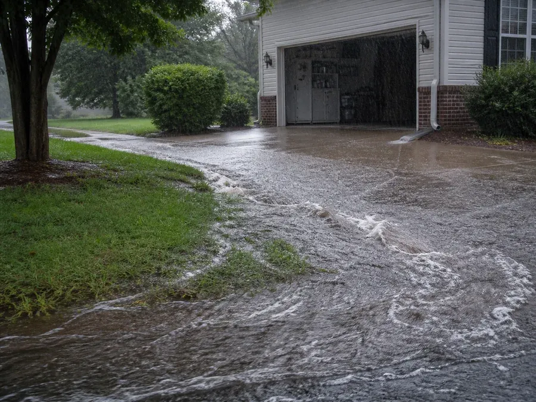
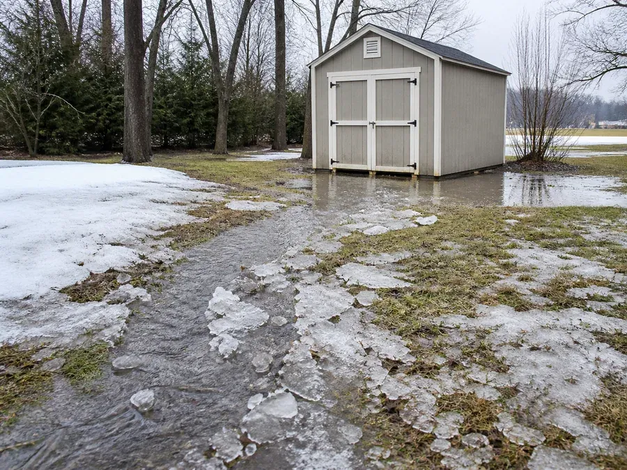
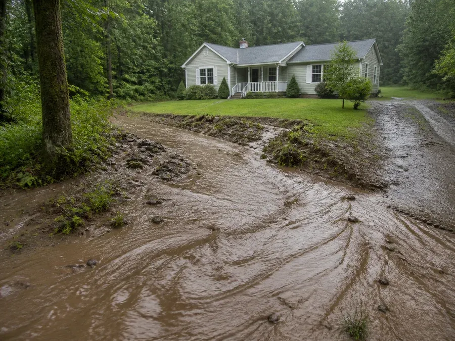

Water overflows
A creek, river, lake, pond, or tidal water rises out of its normal place.
Inland Flood Coverage
This guide shows what inland flood means, what does not count, and how your limits work - using short examples that are easy to understand.
These amounts were supplied for this coverage example. Your declarations and full policy control.

Inland flood means water temporarily covers land that is normally dry because inland or tidal water overflowed, fast surface water built up or ran off, or a river of liquid mud flowed across the ground. There must be direct, physical damage that needs repair or replacement.
The endorsement uses three causes. Each one must create a general and temporary covering of land that is normally dry.
A creek, river, lake, pond, or tidal water rises out of its normal place.
Heavy rain or ice melt builds up fast and runs across the ground.
Water carries earth like a river of flowing mud across normally dry land.
Ask two questions: Did qualifying floodwater cover normally dry land? Did it directly damage a type of property this endorsement covers? Both answers matter.
These examples describe a qualifying cause. Payment still depends on the damaged property, limits, deductible, waiting period, and every other policy term.

A storm makes the creek overflow. Water spreads across the normally dry yard and enters the first floor, damaging walls and flooring.

A sudden downpour sends a sheet of surface water over normally dry ground and into the attached garage, damaging the building.

Warm weather melts heavy ice. The water builds up quickly, crosses normally dry land, and damages a covered private shed.

Water carries loose earth as flowing liquid mud across normally dry land and into the residence.
Another part of the policy might respond to some of these losses, but this inland-flood endorsement does not turn every water problem into a flood claim.
A washing-machine hose breaks and water spreads across the kitchen. No water crossed normally dry land from outside.
Water below the ground slowly leaks through a basement wall, but there is no qualifying inland flood visible on the property.
Wet soil moves as a heavy mass and pushes into the home. It is a landslide or slope failure, not a river of liquid mud.
A tsunami causes water damage to normally dry land.
Usually not by itself. It may be considered only when a qualifying inland flood is the main cause and there is evidence of inland flood on the insured location. A sump pump's mechanical breakdown is not covered by this endorsement.
Even when the cause is a real inland flood, only property and expenses listed in the endorsement can be considered.
The residence and its attached garage.
Covered structures set apart from the home, such as a private shed.
Covered personal property at the insured location, but not personal property in a basement.
Necessary extra living costs or loss of rent, subject to the schedule's sublimit.
Reasonable removal expense for debris caused by covered inland-flood damage.
Reasonable cost to move covered property to safety, with protection rules and a 30-day limit.
Up to $250 to tow a covered mobile home away from flood danger, with no deductible for that expense.
Limited coverage up to $5,000 when directly caused by a flood occurrence, subject to the endorsement's rules.
These are examples from the endorsement's Property Not Covered list. The full list in the endorsement controls.
The endorsement also says it does not pay for loss caused by or tied to these items:
The dollar amounts below come from the coverage details supplied for this guide. Always compare them with the declarations for the actual policy.
The most the endorsement pays for covered loss from one flood occurrence.
The most the endorsement pays for all covered flood occurrences in one policy period.
The part of covered loss you are responsible for in each flood occurrence.
If covered damage is $6,000, the first $500 is the deductible. The amount above it is $5,500, subject to all policy terms.
If covered damage is much more than $10,000, the payment for that occurrence cannot be more than the $10,000 occurrence limit.
Payments from separate flood occurrences add together. Once they reach $50,000 in the policy period, no more is available under the aggregate limit.
All inland-flood damage and covered expenses from instances during one consecutive 168-hour period are grouped together.
The $500 deductible applies to loss, damage, or expense from each flood occurrence.
Any property-coverage sublimit is part of, not extra money on top of, the inland-flood limits.
A flood occurrence that begins before the endorsement starts, or within 15 days (360 hours) after it starts, is excluded. A limited exception may apply when qualifying flood insurance was already in force for at least 72 hours and this policy replaces it with no lapse. A midterm limit increase also has a 15-day rule, except at renewal.
The endorsement is not affiliated with the NFIP and does not satisfy a lender's mandatory flood-insurance requirement. If other insurance covers the same loss, this endorsement pays only covered loss above the amount due from the other insurance, up to its limits.
This is a quick guide, not a claim decision. The full policy and facts of the loss decide coverage.
Look for overflow, fast surface runoff, ice melt, or true flowing mud.
The home may qualify while a car, driveway, fence, or basement belongings do not.
Check the 15-day rule, deductible, per-occurrence limit, aggregate limit, sublimits, and full policy.
This page is based on endorsement HO 0201M 07-20 (7 pages). It is an educational summary, not a replacement for the endorsement, declarations, or full policy.
Show us what happened, where the water came from, and what was damaged. We can help you compare the facts with the policy language.
Call Bill Layne Insurance: 336-835-1993